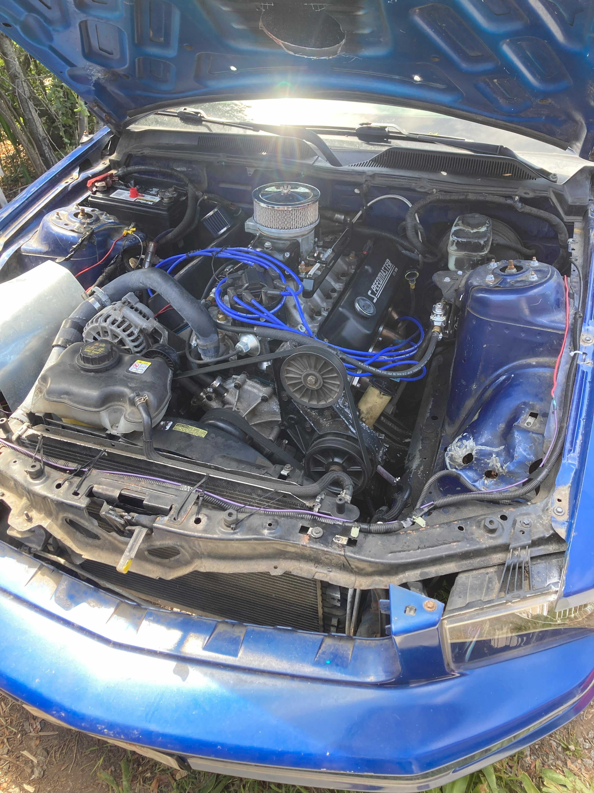
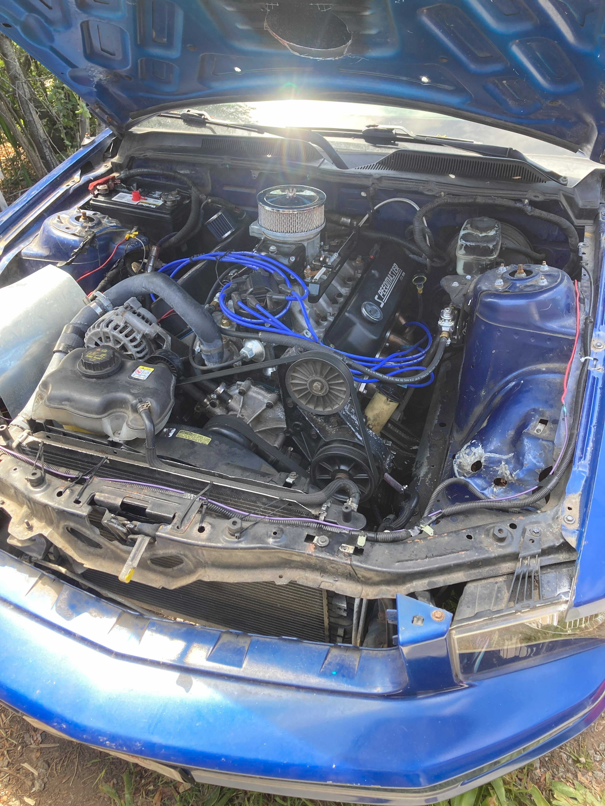

FrankEngineStein: Custom Mustang Build
Project Overview
Converted a 2006 Mustang into a budget, high-performance track car, focusing on powertrain optimization and driver responsiveness.
The project involved a custom powertrain transplant including engine build for high-rpm power and development of a custom transmission system to provide haptic driving feedback.
Key Contributions:
- Complete powertrain transplant to enhance performance and responsiveness.
- Engine built for high-rpm power, optimized for track racing conditions.
- Custom instrument cluster for improved driver control and feedback.
- Developed a transmission shifting system that enhances haptic feedback for precise control on the track.
 
